성우의 목소리 권리를 24시간 모니터링하고, 무단 사용을 탐지·분석해 증거로 남기는 솔루션입니다. 현재까지의 진행 상황을 정리했습니다.
수집·분석·탐지까지 모든 기능을 권리자가 직접 다루는 구조였습니다.
기능이 늘며 조작 난이도가 높아졌습니다. 수집·분석은 지음이 자동 실행하고, 권리자에게는 결과만 보는 화이트 테마 클라이언트 페이지를 별도로 제공합니다.
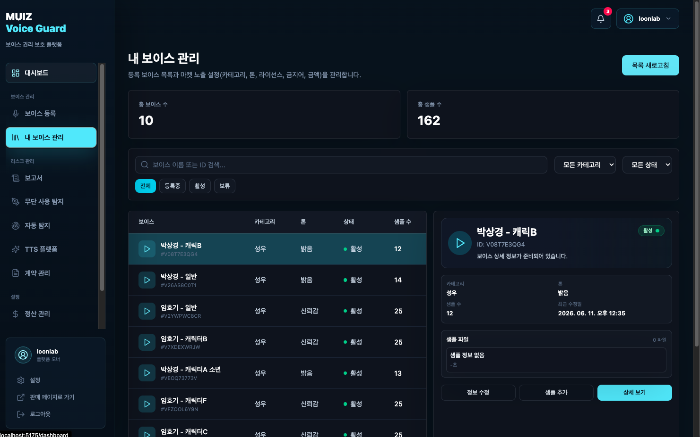
보이스 등록 · 무단 사용 탐지 · 자동 탐지 — 복잡한 수집/분석을 지음이 직접 실행합니다.
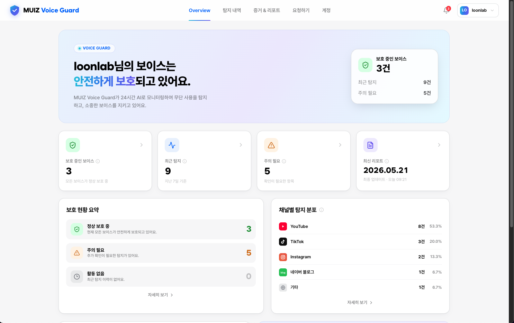
로그인 · 탐지 내역 · 증거 리포트 · 요청하기 — 본인 목소리 결과만 간편하게 확인합니다.
전달받은 음성 데이터를 권리자명과 보이스(캐릭터명) 단위로 구분해 등록합니다.
전달받은 음성 데이터를 권리자명과 보이스(캐릭터명) 기준으로 구분해 등록합니다.
한 명의 권리자가 여러 보이스를 함께 관리할 수 있도록 제작했습니다.
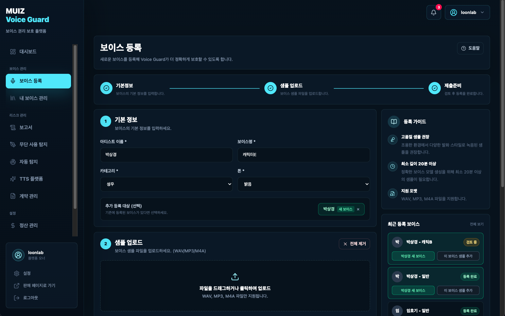
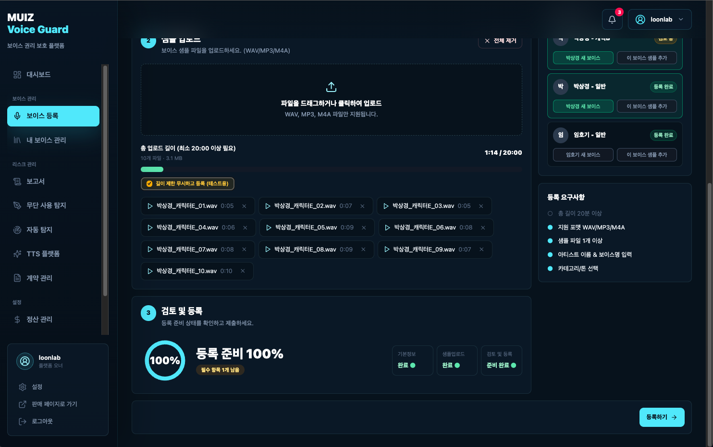
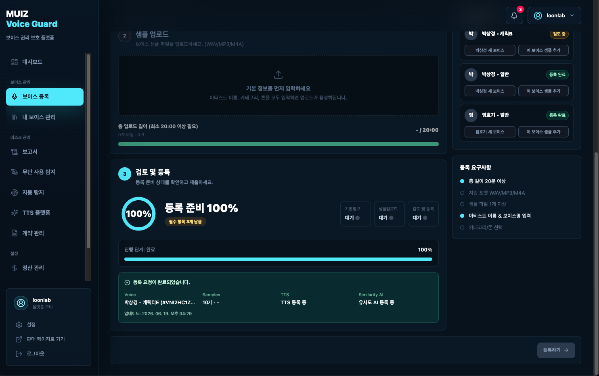
WAV·MP3·M4A 파일을 지원하며, 총 길이 20분 이상과 필수 정보가 충족되면 등록 준비가 100% 완료됩니다.
등록된 보이스의 메타 정보와 샘플을 관리합니다.
등록한 보이스 목록과 마켓 노출 설정(카테고리·톤·라이선스·금지어·금액 등)을 관리합니다. 보이스별로 샘플을 추가하거나 상세 정보를 확인할 수 있습니다.
권리자명·캐릭터명·키워드를 조합해 영상 플랫폼에서 무단 사용을 찾아냅니다.
AI가 검색어를 조합합니다. 권리자명·캐릭터명에 추가 키워드를 더해 검색 조합을 생성합니다.
YouTube · TikTok · Instagram 등 영상 유통 플랫폼에서 영상을 수집하고 분석합니다.
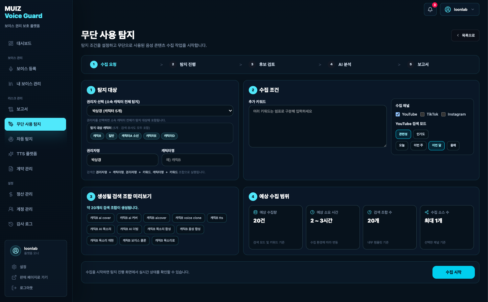
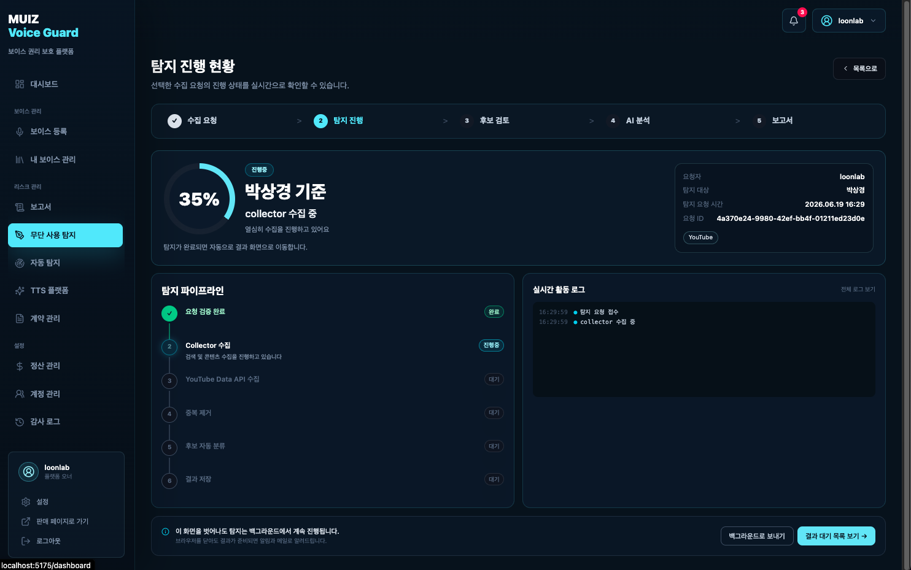
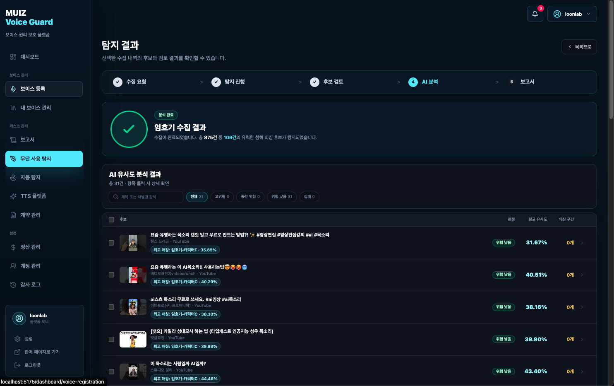
임호기 성우님 보이스는 875건 중 109건이 의심 후보로 수집됐으나, 키워드 검색만으로는 AI 합성 콘텐츠가 발견되지 않아 모두 '위험 낮음'으로 분류됐습니다.
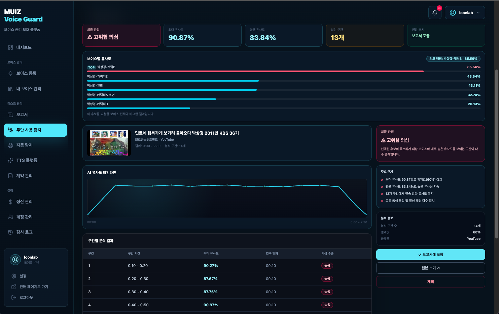
키워드로는 AI 합성이 발견되지 않아, 유사도 분석을 검증하기 위해 박상경 성우님이 실제로 실연한 영상을 분석했습니다.
고위험 수치를 확인하며 유사도 분석이 실연 음성을 정확히 식별함을 검증했습니다.
정확도 참고 — 캐릭터별로 샘플을 나누다 보니 분량이 3~4분에 그쳐 정확도가 기대보다 다소 낮았습니다. 샘플을 더 확보하면 정확도는 더 높아집니다.
키워드로 잡히지 않는 무단 사용을, 매일 수집하는 무작위 영상에서 찾아냅니다.
키워드로 검색되지 않는 영역을 잡기 위해, 매일 영상 플랫폼에서 일정량의 무작위 영상을 수집합니다. (예능 쇼츠, 영화 소개 쇼츠 등)
수집한 영상의 목소리에 우리 측 권리자의 목소리가 포함됐는지 분석합니다.
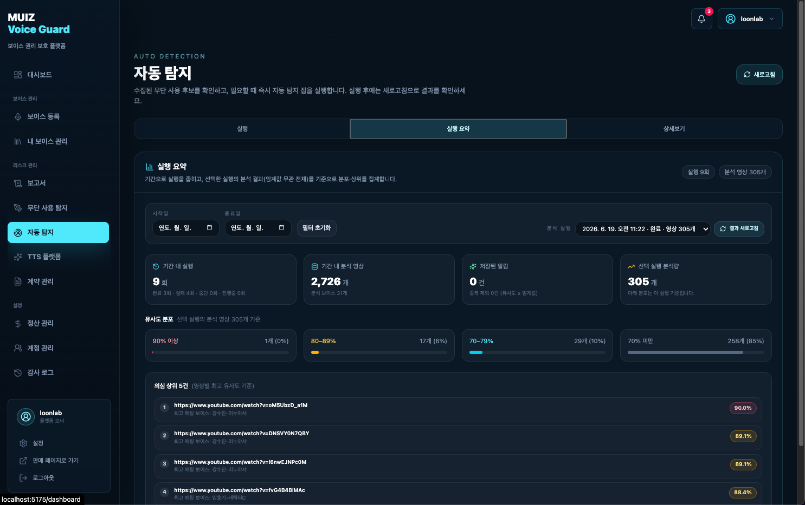
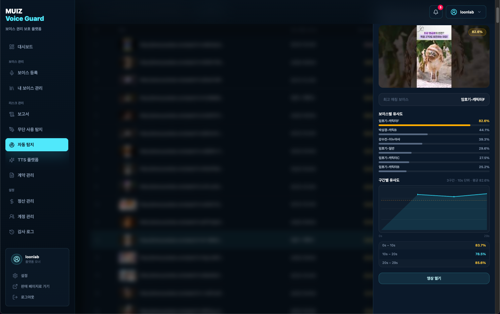
유사도 분석에서 임호기 성우님의 캐릭터F와 비슷한 목소리의 영상을 발견했습니다.
직접 들어보니 비슷하지만, 임호기 성우님의 목소리는 아닌 것으로 판단했습니다.
실제 영상 들어보기개선 과제 — 성우 간 유사한 목소리가 있을 때 유사도가 높게 나오는 구간의 변별력 향상이 필요합니다. 샘플 양을 늘리면 해결될 것으로 봅니다.
결과만 간편하게 확인하는, 권리자 전용 화이트 테마 페이지입니다.
조작이 복잡한 운영자 콘솔과 달리, 권리자는 결과만 확인하는 별도 페이지를 사용합니다.
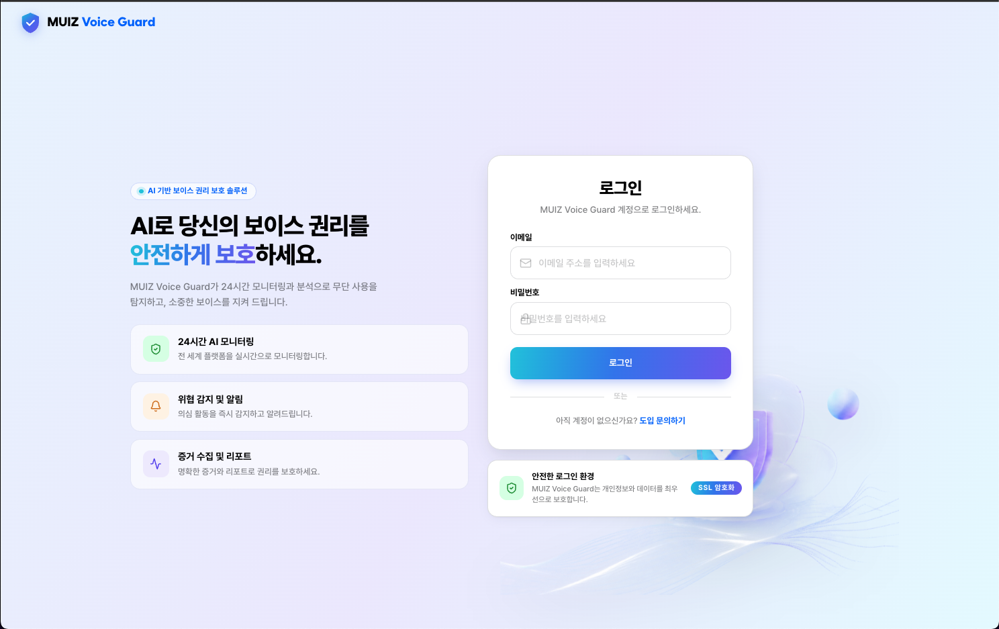
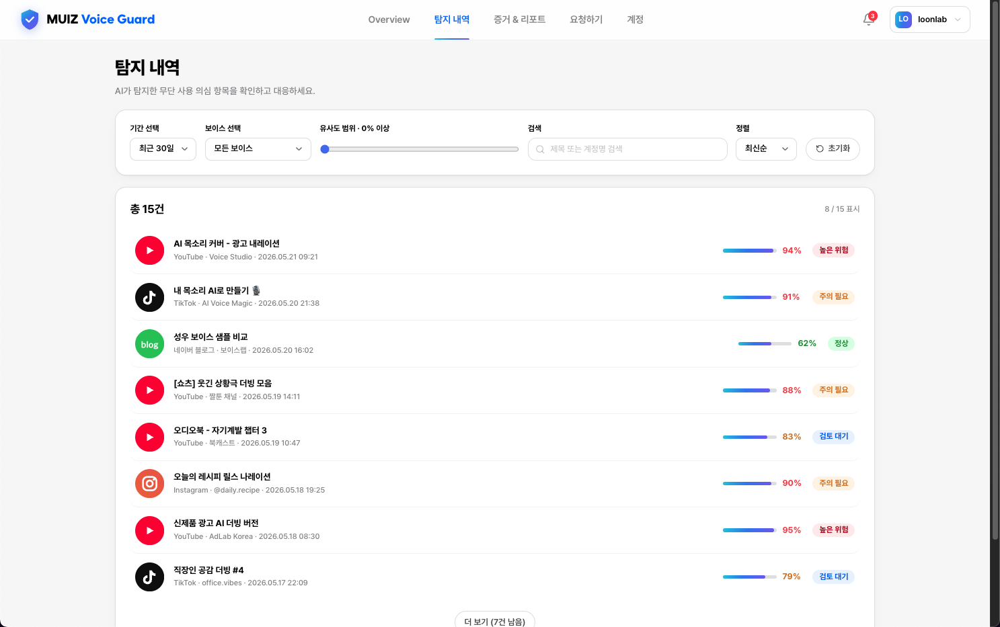
각 권리자는 전달받은 이메일을 통해 본인 목소리에 대한 분석 결과만 확인합니다.
탐지된 위험의 증거와 분석 리포트를 확인하고 다운로드할 수 있습니다.
AI가 영상의 내용과 상황을 최종 정리해, 한 장의 증거 리포트로 보여줄 예정입니다.
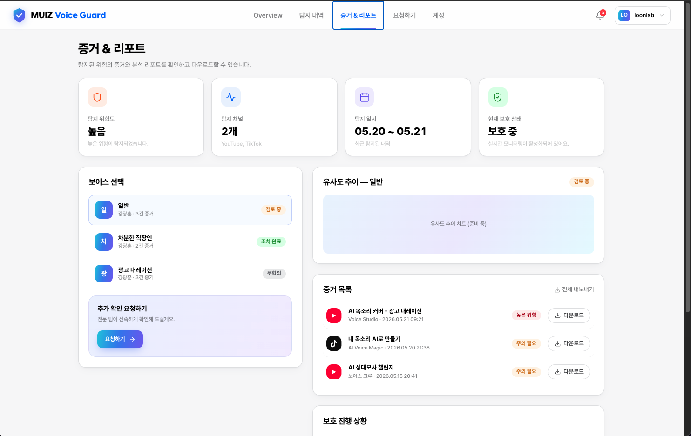
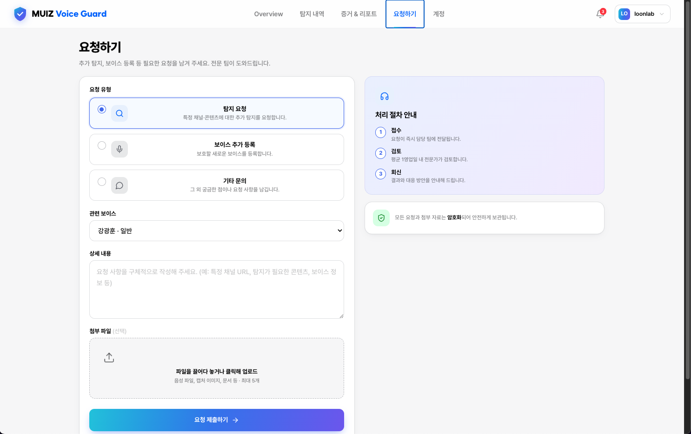
모니터링이 필요한 콘텐츠·플랫폼 신고를 남길 수 있습니다.
지음지식과 연계된 법무법인과 협업해 법적 조치와 상담까지 지원합니다.
유사도 분석 정확도를 끌어올립니다.
성우 간 비슷한 목소리를 더 정확히 구분합니다.
AI 요약 리포트를 고도화합니다.
법적 조치·상담 프로세스를 정식 제공합니다.